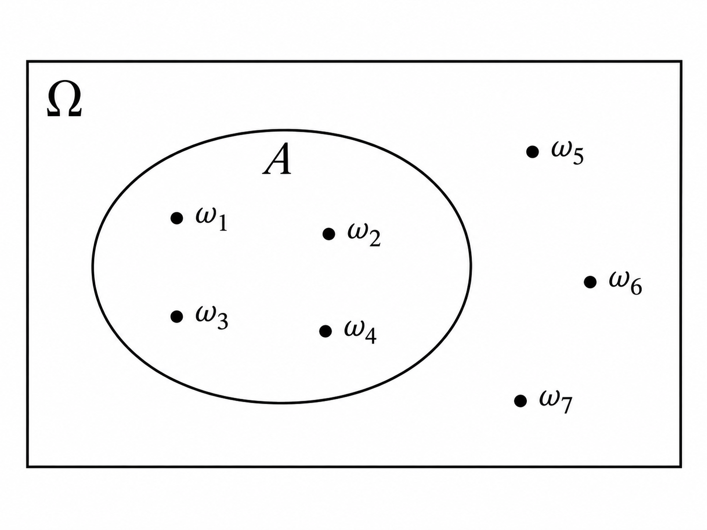

[Formalização] Parte 1 de 3 - Espaço de Probabilidade
Antes de começarmos, vale dizer que este é o coração de muita coisa que faremos em Data Science, Machine Learning, Estatística e Inferência Causal.
Nesta parte, começaremos um dos passos mais importantes da formação de alguém que trabalha com dados: aprender a modelar.
Até agora descrevemos a incerteza de maneira intuitiva. Agora começaremos a transformar essa descrição em uma estrutura matemática precisa.
Esse processo tem um nome fundamental: formalização.
Vamos aprender a formalizar aquilo que muitas vezes nos é apresentado de maneira excessivamente informal.
Uma teoria não é simplesmente uma coleção de equações. As equações aparecem depois. Antes delas, precisamos definir quais são os objetos do problema, o que cada um significa, quais relações existem entre eles e quais premissas estamos assumindo.
É isso que transforma uma descrição intuitiva de um fenômeno em uma estrutura sobre a qual podemos raciocinar sistematicamente.
O que exatamente vamos formalizar?
No capítulo anterior partimos de um fenômeno estocástico: existe incerteza sobre o resultado individual, mas podem surgir regularidades quando observamos o fenômeno repetidamente.
Para transformar essa ideia em Matemática, nossa formalização acontecerá em duas grandes etapas.
Primeiro queremos representar matematicamente um ensaio do experimento:
- o que pode acontecer;
- sobre quais acontecimentos queremos falar;
- e como atribuímos probabilidades a eles.
É isso que faremos neste capítulo.
Depois manteremos fixo o experimento básico e perguntaremos:
como representar probabilisticamente vários ensaios desse experimento em conjunto?
Essa será uma nova etapa da formalização. Ainda estaremos construindo a estrutura probabilística; a conexão formal com uma amostra virá depois, quando introduzirmos variáveis aleatórias.
Em resumo, nossa direção geral é:
\[ \boxed{\text{formalizar um ensaio}} \qquad\longrightarrow\qquad \boxed{\text{formalizar vários ensaios conjuntamente}} \]
Um ensaio é uma execução completa do experimento tal como ele foi definido.
Isso significa que a fronteira do experimento importa.
Se definirmos o experimento como “lançar uma moeda uma vez”, um ensaio termina depois de um lançamento.
Se definirmos o experimento como “lançar uma moeda duas vezes e registrar a ordem”, um ensaio termina somente depois dos dois lançamentos, e \((H,T)\) é um único resultado desse ensaio.
Neste capítulo, construiremos sempre o espaço de probabilidade correspondente a um ensaio completo do experimento definido.
Neste capítulo, portanto, ficaremos somente na primeira caixa.
A pergunta que queremos responder é:
Onde vive a probabilidade de uma realização do experimento?
Em muitos cursos mais aplicados, aprendemos rapidamente a calcular probabilidades, usar distribuições e aplicar fórmulas sem parar para construir com cuidado a estrutura matemática dentro da qual essas probabilidades são definidas.
É isso que faremos agora.
Para representar matematicamente um ensaio, construiremos uma estrutura em três etapas, sempre nessa ordem:
\[ \left. \begin{array}{@{}l l c c@{}} 1. & \text{Quais resultados um ensaio do experimento pode produzir?} & \quad\longrightarrow\quad & \Omega \\[0.35em] 2. & \text{Quais conjuntos desses resultados vamos admitir como eventos?} & \quad\longrightarrow\quad & \mathcal{F} \\[0.35em] 3. & \text{Como atribuímos uma probabilidade a cada um desses eventos?} & \quad\longrightarrow\quad & P \end{array} \right\} \quad\Longrightarrow\quad \boxed{(\Omega,\mathcal{F},P)} \]
O objeto \((\Omega,\mathcal F,P)\) é chamado de Espaço de Probabilidade (Probability Space).
Essas serão exatamente as três partes deste capítulo:
\(\Omega\) — Espaço amostral: quais resultados são possíveis?
\(\mathcal F\) — Família de eventos: sobre quais conjuntos desses resultados queremos falar?
\(P\) — Lei de probabilidade: como quantificamos a incerteza sobre esses eventos?
Não vamos começar decorando \((\Omega,\mathcal F,P)\).
Vamos construir uma peça de cada vez. Quando chegarmos ao final, a notação terá surgido naturalmente porque cada objeto resolve uma pergunta diferente.
Ao final deste capítulo teremos construído a estrutura básica para representar matematicamente um ensaio completo do experimento.
No próximo capítulo ainda permaneceremos nessa primeira etapa: veremos o que precisa ser ajustado quando o espaço amostral é contínuo.
Só depois passaremos à pergunta seguinte:
como representar probabilisticamente vários ensaios desse mesmo experimento em conjunto?
1. Espaço amostral (\(\Omega\))
Pergunta-guia: quais resultados um ensaio do experimento pode produzir?
Nosso primeiro objetivo é construir \(\Omega\).
Antes de começar, vamos fixar uma notação que aparecerá o tempo todo. Usaremos a letra grega minúscula \(\omega\) para representar um resultado possível. Quando o espaço amostral estiver definido, escreveremos
\[ \boxed{\omega\in\Omega}. \]
Ainda vamos construir \(\Omega\) com cuidado. Por enquanto, guarde apenas: \(\omega\) é um resultado; \(\Omega\) será o conjunto que reúne todos os resultados possíveis.
O experimento
Para transformar um fenômeno incerto em um objeto matemático, precisamos primeiro dizer exatamente:
Qual é o procedimento completo cujo resultado queremos observar?
Chamaremos esse procedimento de experimento.
Por exemplo:
lançar um dado uma vez e observar a face superior.
Quando executamos esse procedimento uma vez, realizamos um ensaio (trial).
O ensaio termina quando o procedimento definido termina, e então observamos um resultado \(\omega\).
Se a face observada for \(4\), por exemplo, escrevemos \(\omega=4\).
A fronteira do experimento
Antes de construir o espaço amostral, existe uma decisão conceitual importante:
onde começa e onde termina um ensaio do experimento que queremos modelar?
Essa fronteira determina o que precisa estar contido em um único resultado \(\omega\).
Considere duas definições diferentes.
Exemplo: uma moeda, um lançamento
Defina o experimento como:
lançar uma moeda uma vez e registrar a face.
Um ensaio termina depois desse lançamento e produz um resultado como \(\omega=H\).
Exemplo: uma moeda, dois lançamentos dentro do mesmo experimento
Agora defina outro experimento:
lançar uma moeda duas vezes e registrar, na ordem, as duas faces.
Um ensaio desse novo experimento só termina depois dos dois lançamentos e pode produzir, por exemplo, \(\omega=(H,T)\).
Nos dois exemplos temos um ensaio e um resultado.
O que mudou foi a definição do experimento e, consequentemente, a quantidade de informação que um único resultado precisa carregar.
A frase “um ensaio produz um resultado” não significa que esse resultado precise ser um único número ou uma única categoria.
Um resultado pode ser uma tupla como \((2,5)\), \((H,T)\) ou \((\text{compra},3.8\text{ s})\).
O que importa é que a tupla inteira descreva o resultado completo de um ensaio do experimento que definimos.
Atenção à notação: quando um resultado tiver várias coordenadas, neste curso preferiremos escrever explicitamente \(\omega=(H,T)\). Em muitos livros você também encontrará a forma compacta \(\omega=HT\). Nesse contexto, \(HT\) é apenas uma abreviação para a mesma informação ordenada: primeira coordenada \(H\), segunda coordenada \(T\). Não significa multiplicação e, por si só, não significa que estamos modelando vários ensaios.
Os resultados possíveis
Antes de realizar um ensaio, não sabemos qual resultado particular \(\omega\) será observado.
Mas precisamos especificar quais valores \(\omega\) pode assumir.
Chamamos o conjunto de todos os resultados possíveis de um experimento de espaço amostral (sample space) e o representamos por \(\Omega\).
Assim, cada possível resultado completo de um ensaio satisfaz
\[ \boxed{\omega\in\Omega}. \]
Depois que o ensaio é realizado, um desses elementos de \(\Omega\) é o resultado observado.
Exemplo: um dado
Considere o experimento:
lançar um dado de seis faces uma vez e observar a face superior.
Um ensaio produz uma única informação: o número observado.
Portanto,
\[ \Omega=\{1,2,3,4,5,6\}. \]
Se observarmos \(4\), então \(\omega=4\) e, naturalmente, \(4\in\Omega\).
Aqui o resultado possui apenas uma coordenada.
Exemplo: dois dados
Agora considere um experimento diferente:
lançar dois dados distinguíveis uma vez e registrar a face de cada dado.
Esse continua sendo um único experimento, e uma execução completa dele continua sendo um único ensaio.
Mas agora o resultado precisa guardar duas informações: a face do dado 1 e a face do dado 2.
Podemos escrever um resultado como \(\omega=(\omega_{\text{dado 1}},\omega_{\text{dado 2}})\). Por exemplo, \(\omega=(2,5)\).
Cada coordenada possui seu próprio conjunto de possibilidades: \(\Omega_{\text{dado 1}}=\{1,2,3,4,5,6\}\) e \(\Omega_{\text{dado 2}}=\{1,2,3,4,5,6\}\).
Para construir o conjunto de todos os resultados completos possíveis, combinamos as possibilidades das duas coordenadas. É aqui que aparece o produto cartesiano.
Dados dois conjuntos \(A\) e \(B\), o produto cartesiano \(A\times B\) é o conjunto de todos os pares ordenados \((a,b)\) com \(a\in A\) e \(b\in B\).
No experimento dos dois dados:
\[ \boxed{ \Omega = \Omega_{\text{dado 1}} \times \Omega_{\text{dado 2}} } \]
ou, explicitamente, \(\Omega=\{1,2,3,4,5,6\}\times\{1,2,3,4,5,6\}\).
Cada elemento de \(\Omega\) é um resultado completo de um único ensaio, como \((2,5)\), \((6,1)\) ou \((3,3)\). Como existem seis possibilidades para cada coordenada, \(|\Omega|=6\times6=36\).
No resultado \(\omega=(2,5)\), a primeira coordenada descreve o dado 1 e a segunda descreve o dado 2.
Elas são duas coordenadas dentro do mesmo resultado de um único ensaio.
Mais adiante aparecerá uma tupla visualmente parecida, \((\omega_1,\ldots,\omega_n)\), em que cada coordenada representará o resultado de um ensaio diferente de um experimento básico.
A ferramenta matemática será novamente um produto cartesiano, mas a interpretação será outra.
\[ \boxed{ \text{várias coordenadas de um resultado} \;\neq\; \text{vários ensaios} } \]
O produto cartesiano é uma ferramenta, não uma interpretação
O produto cartesiano resolve uma necessidade matemática geral:
construir objetos com várias coordenadas.
A razão pela qual existem várias coordenadas depende do experimento que definimos.
No exemplo dos dois dados, \(\omega=(\omega_{\text{dado 1}},\omega_{\text{dado 2}})\) tem duas coordenadas porque queremos registrar duas partes do resultado de um mesmo ensaio.
Também poderíamos selecionar uma pessoa e registrar altura e peso. Um resultado teria a forma \(\omega=(\text{altura},\text{peso})\).
Ou poderíamos definir como experimento “lançar uma moeda três vezes e registrar a sequência”. Nesse caso, um único ensaio poderia produzir \(\omega=(H,T,H)\), e o espaço amostral seria \(\{H,T\}^3\).
O produto cartesiano, portanto, não significa “repetição”. Ele apenas nos fornece uma maneira de organizar componentes de um objeto.
Quando mais adiante fixarmos um experimento básico e quisermos representar vários ensaios conjuntamente, o produto cartesiano aparecerá outra vez.
A diferença será conceitual:
- aqui, as coordenadas pertencem ao resultado de um único ensaio;
- lá, cada coordenada corresponderá ao resultado de um ensaio diferente.
Espaços amostrais podem ter tamanhos diferentes
Até aqui usamos exemplos com poucos resultados possíveis, mas \(\Omega\) não precisa ser finito.
Na verdade, existem três situações importantes.
1. Espaço amostral finito
Um espaço amostral é finito quando possui um número limitado de resultados possíveis.
Por exemplo, ao lançar um dado de seis faces:
\[ \Omega=\{1,2,3,4,5,6\}. \]
Podemos literalmente listar todos os resultados possíveis e terminar a lista.
O mesmo acontece com uma moeda:
\[ \Omega=\{H,T\}. \]
2. Espaço amostral infinito enumerável
Agora imagine que queremos registrar:
quantas chamadas chegam a um sistema durante determinado período?
Os resultados possíveis são:
\[ \Omega=\{0,1,2,3,\ldots\}. \]
Não existe um último número possível nessa lista.
Portanto, \(\Omega\) possui infinitos elementos.
Mas existe algo importante: ainda conseguimos imaginar os resultados sendo listados, um depois do outro:
\[ 0,1,2,3,4,\ldots \]
Por isso dizemos que esse conjunto é infinito enumerável (countably infinite).
Outro exemplo seria o número de tentativas até um usuário conseguir concluir determinado processo:
\[ 1,2,3,4,\ldots \]
Novamente, existem infinitas possibilidades, mas elas podem ser organizadas em uma sequência.
3. Espaço amostral infinito não enumerável
Agora considere outra pergunta:
quanto tempo um usuário leva para concluir o checkout?
Poderíamos representar os resultados possíveis por
\[ \Omega=[0,\infty). \]
Mas o que significa esse intervalo?
Ele contém não apenas \(1\), \(2\), \(3\), etc., mas qualquer valor intermediário possível:
\[ 1.2,\;1.23,\;1.234,\;1.2345,\ldots \]
E isso não acontece apenas entre \(1\) e \(2\).
Entre quaisquer dois valores diferentes, por mais próximos que estejam, existem infinitos outros valores.
Por exemplo, entre \(1.2\) e \(1.3\) temos
\[ 1.21,\;1.211,\;1.212,\;1.25,\ldots \]
Não existe um “próximo número” depois de \(1.2\) da mesma forma que existe um próximo inteiro depois de \(1\).
Por isso não conseguimos listar esses resultados um a um como fizemos com
\[ \{0,1,2,3,\ldots\}. \]
Chamamos esse tipo de conjunto de infinito não enumerável (uncountably infinite).
Portanto, podemos ter:
- finito: \(\Omega=\{H,T\}\);
- infinito enumerável: \(\Omega=\{0,1,2,3,\ldots\}\);
- infinito não enumerável: \(\Omega=[0,\infty)\).
Os conjuntos
\[ \{0,1,2,3,\ldots\} \]
e
\[ [0,\infty) \]
possuem ambos infinitos elementos.
Mas são infinitos de naturezas diferentes.
No primeiro, conseguimos conceitualmente enumerar os resultados:
\[ 0,1,2,3,\ldots \]
No segundo, isso não é possível: dentro de qualquer pequeno intervalo continuam existindo infinitas possibilidades.
Essa diferença parecerá muito menos abstrata quando começarmos a trabalhar com variáveis discretas e contínuas.
Essa distinção está por trás de algo que usamos o tempo inteiro em Data Science.
Considere três coisas que poderíamos registrar:
- forma de pagamento: cartão, Pix ou boleto;
- número de compras de um cliente: \(0,1,2,3,\ldots\);
- tempo até concluir uma compra: \(2.31\), \(2.314\), \(2.3147,\ldots\) segundos.
Esses objetos têm naturezas diferentes.
A forma de pagamento assume categorias.
O número de compras assume valores que podemos contar.
O tempo pode, pelo menos matematicamente, assumir qualquer valor dentro de um intervalo.
Mais adiante, quando introduzirmos variáveis aleatórias, veremos que essa diferença ajuda a entender de onde vêm ideias como variáveis categóricas, discretas e contínuas — e por que não usamos exatamente as mesmas ferramentas probabilísticas para todas elas.
Por enquanto, não precisamos desenvolver nenhuma teoria adicional.
A ideia importante é apenas perceber que o conjunto de resultados possíveis pode ter estruturas muito diferentes — e que essa estrutura terá consequências para a forma como representaremos probabilidades mais adiante.
O espaço amostral precisa ser completo e sem ambiguidade
Se \(\Omega\) pretende representar os resultados possíveis de um ensaio, queremos duas coisas muito simples:
- coletivamente exaustivos: não importa o que aconteça no experimento, algum resultado de \(\Omega\) precisa acontecer. Não podemos esquecer nenhuma possibilidade;
- mutuamente exclusivos: se um resultado aconteceu, nenhum outro resultado elementar pode ter acontecido ao mesmo tempo.
Juntas, essas duas ideias dizem algo ainda mais simples:
ao final de um ensaio, devemos conseguir apontar para exatamente um \(\omega\in\Omega\) e dizer: “foi isso que aconteceu”.
Um exemplo simples
Considere o experimento:
lançar uma moeda duas vezes e registrar a ordem dos resultados.
Então,
\[ \Omega=\{(H,H),(H,T),(T,H),(T,T)\}. \]
Esse espaço é coletivamente exaustivo porque qualquer sequência possível de dois lançamentos aparece na lista.
E seus resultados são mutuamente exclusivos porque, em um mesmo ensaio, não podemos observar simultaneamente \((H,T)\) e \((T,H)\): ou o primeiro lançamento foi \(H\) e o segundo \(T\), ou ocorreu o contrário.
Isso também mostra por que \((H,T)\) e \((T,H)\) precisam aparecer como resultados diferentes: o resultado elementar deve descrever completamente aquilo que decidimos observar.
Se retirássemos \((T,H)\), teríamos esquecido uma possibilidade e o espaço deixaria de ser exaustivo.
Essas duas propriedades dizem quando um espaço amostral está bem definido.
Mas ainda falta uma pergunta importante:
quanto detalhe devemos colocar em cada resultado?
O espaço amostral depende da pergunta
O espaço amostral não vem pronto da realidade. Ele depende do que decidimos preservar no modelo.
Considere o experimento mais simples possível: lançar uma moeda uma vez.
Se queremos registrar apenas a face observada, basta
\[ \Omega_1=\{H,T\}. \]
Esse espaço já é mutuamente exclusivo e coletivamente exaustivo.
Mas imagine que, por algum motivo, acreditamos que o clima também seja relevante para o fenômeno. Podemos construir um modelo mais detalhado:
\[ \Omega_2= \{ (H,\text{chove}), (H,\text{não chove}), (T,\text{chove}), (T,\text{não chove}) \}. \]
Esse espaço também pode ser construído de forma mutuamente exclusiva e coletivamente exaustiva.
Então qual dos dois está “certo”?
Os dois podem estar.
A diferença é o que escolhemos guardar no modelo.
Se o clima não tem qualquer papel na pergunta que queremos responder, incluí-lo apenas adiciona detalhe desnecessário. Se acreditamos que ele pode importar, talvez precisemos preservá-lo.
O mundo real contém uma quantidade enorme de detalhes.
Ao construir um modelo, precisamos decidir quais detalhes manter e quais ignorar.
Essa escolha exige contexto, julgamento e conhecimento do problema:
formalizar é também uma decisão de modelagem.
Trazendo para um problema real: checkout
Considere agora um usuário chegando ao checkout de um e-commerce.
Se nossa pergunta for apenas
o usuário realizará uma compra?
podemos trabalhar com
\[ \Omega=\{\text{compra},\text{não compra}\}. \]
Se também quisermos registrar como a compra foi feita, precisaremos preservar mais informação:
\[ \Omega= \{ (\text{compra},\text{cartão}), (\text{compra},\text{Pix}), (\text{compra},\text{boleto}), (\text{não compra}) \}. \]
A situação real não mudou. Mudou a pergunta que queremos responder e, com ela, a resolução do nosso modelo.
O princípio é:
os resultados precisam ser mutuamente exclusivos, coletivamente exaustivos e detalhados o suficiente para responder à pergunta que queremos fazer — sem preservar informação que não precisamos.
Fechando a primeira peça
Construímos a primeira parte do Espaço de Probabilidade:
\[ \boxed{\Omega} \]
Agora sabemos representar todos os resultados que um ensaio do experimento pode produzir.
E vimos também que um resultado \(\omega\) não precisa carregar apenas uma informação: quando o experimento exige várias, podemos construir espaços mais ricos usando estruturas como o produto cartesiano.
Mas ainda não atribuímos nenhuma probabilidade.
Antes disso, precisamos decidir quais conjuntos de resultados queremos tratar como objetos probabilísticos.
É daí que nasce a segunda peça: \(\mathcal F\).
2. Família de eventos (\(\mathcal F\))
Pergunta-guia: sobre quais acontecimentos do experimento queremos ser capazes de atribuir probabilidades?
Já construímos \(\Omega\), o conjunto de todos os resultados possíveis.
Agora precisamos construir os objetos aos quais, na próxima etapa, atribuiremos probabilidades.
Esses objetos são os eventos.
Eventos: transformando perguntas reais em conjuntos
Quando realizamos um ensaio, observamos um único resultado \(\omega\in\Omega\).
Mas normalmente queremos fazer perguntas mais amplas do que “qual resultado específico ocorreu?”.
Considere novamente um único ensaio do experimento com duas moedas distinguíveis A e B. Como definimos como um único ensaio, sabemos que um possível elemento é o \(w = (H, T)\).
Isso nos leva a definir o espaço amostral garantindo as suas duas propriedades (mutuamente exclusivo e coletivamente exaustivo). Temos, então:
\[ \Omega=\{(H,H),(H,T),(T,H),(T,T)\}. \]
Podemos perguntar, por exemplo:
Saiu exatamente uma cara?
Essa afirmação é verdadeira para dois resultados possíveis: \((H,T)\) e \((T,H)\).
Reunimos então esses resultados no conjunto
\[ A=\{(H,T),(T,H)\}. \]
Esse conjunto é um evento: um subconjunto de \(\Omega\) que representa uma pergunta ou afirmação sobre o resultado do experimento.
\[ \boxed{ \text{pergunta sobre o experimento} \longrightarrow \text{evento }A\subseteq\Omega } \]

Quando realizamos o ensaio e observamos \(\omega\), dizemos que o evento \(A\) ocorreu exatamente quando \(\omega\in A\).
Por exemplo, se observamos \(\omega=(H,T)\), então \(\omega\in A\) e a resposta para “saiu exatamente uma cara?” é sim.
Lembrete de notação: manteremos os pares explícitos, como \((H,T)\), porque eles deixam visível qual informação pertence a cada coordenada. Se alguma fonte escrever \(HT\), leia essa forma apenas como uma abreviação de \((H,T)\) neste tipo de experimento.
O resultado é um único elemento \(\omega\in\Omega\) observado em um ensaio.
O evento é um conjunto de resultados, isto é, \(A\subseteq\Omega\).
Assim, observar \(\omega=(H,T)\) não significa que \((H,T)\) e \((T,H)\) ocorreram ao mesmo tempo. Significa que o único resultado observado, \((H,T)\), pertence ao evento
\(A=\{(H,T),(T,H)\}\).
Dizer que \(A\) ocorreu significa simplesmente que \(\omega\in A\).
Combinando perguntas
Como eventos são conjuntos, operações entre conjuntos nos permitem combinar perguntas sobre o mesmo ensaio.
Defina
\(A=\) “a moeda A mostra cara” e
\(B=\) “a moeda B mostra cara”.
Então:
- \(A\cap B\): A e B ocorrem;
- \(A\cup B\): A ou B ocorre;
- \(A^c\): A não ocorre.
É por isso que a Teoria dos Conjuntos aparece aqui: ela fornece uma linguagem precisa para combinar afirmações sobre o resultado do experimento.
Um único resultado pode fazer vários eventos ocorrerem.
Se \(\omega=(H,H)\), por exemplo, então \(\omega\in A\) e \(\omega\in B\). Portanto, os dois eventos ocorreram.
Isso não contradiz a exclusividade dos resultados elementares: houve apenas um resultado, \((H,H)\), mas esse mesmo resultado pode pertencer a vários conjuntos-eventos.
Dois eventos especiais
A própria estrutura dos conjuntos nos fornece dois eventos que aparecerão o tempo todo.
Considere um dado comum, com \(\Omega=\{1,2,3,4,5,6\}\).
Evento certo: \(\Omega\)
Pergunte:
O resultado foi algum número entre 1 e 6?
Qualquer possível resultado do experimento torna essa afirmação verdadeira. O evento correspondente é o próprio \(\Omega\).
Por isso ele é chamado de evento certo (certain event). Mais adiante teremos \(P(\Omega)=1\).
Evento impossível: \(\varnothing\)
Agora pergunte:
O resultado do dado foi 7?
Nenhum elemento de \(\Omega\) satisfaz essa afirmação. O conjunto de resultados que a tornariam verdadeira não contém elemento algum:
\[ \varnothing. \]
Por isso \(\varnothing\) é o evento impossível (impossible event). Mais adiante teremos \(P(\varnothing)=0\).
Esses exemplos podem parecer óbvios, mas mostram a lógica dos eventos com clareza: uma pergunta é representada pelo conjunto de todos os resultados que fariam a resposta ser “sim”.
De eventos para uma família de eventos
Agora temos vários eventos — \(A\), \(B\), \(A^c\), \(A\cup B\), etc.
Como queremos atribuir probabilidades a eles, precisamos reuni-los em uma coleção.
Na matemática, uma coleção de conjuntos é frequentemente chamada de uma família de conjuntos.
Chamaremos nossa família de eventos de \(\mathcal F\).
Assim:
- \(\omega\in\Omega\): um resultado possível é um elemento do espaço amostral;
- \(A\subseteq\Omega\): um evento é um subconjunto do espaço amostral;
- \(A\in\mathcal F\): \(A\) pertence à família de eventos considerada, ou seja, é um elemento de \(\mathcal F\) (e não um subconjunto!).
Mas existe uma exigência natural.
Até aqui chamamos \(\mathcal F\) de nossa família de eventos. Podemos agora dar um nome um pouco mais formal a essa coleção: ela será o nosso espaço de eventos.
A ideia é que esse espaço não contenha apenas os eventos que nos interessam originalmente, como \(A\) e \(B\).
Se conseguimos perguntar:
- “\(A\) ocorreu?”
- “\(B\) ocorreu?”
também queremos conseguir perguntar:
- “\(A\) não ocorreu?”
- “\(A\) ou \(B\) ocorreu?”
- “\(A\) e \(B\) ocorreram?”
Essas novas perguntas correspondem aos eventos \(A^c\), \(A\cup B\) e \(A\cap B\).
Por isso, queremos que, ao combinar eventos que já pertencem a \(\mathcal F\), os novos eventos produzidos continuem pertencendo a \(\mathcal F\).
Na matemática, dizemos que uma coleção é fechada sob uma operação quando aplicamos essa operação aos seus elementos e o resultado continua dentro da própria coleção.
Por exemplo:
- os números inteiros são fechados sob adição, porque a soma de dois inteiros continua sendo um inteiro;
- mas não são fechados sob divisão, porque, por exemplo, \(1/2\) não é inteiro.
No nosso caso, queremos que o espaço de eventos seja fechado sob operações de conjuntos.
Assim:
- se \(A\in\mathcal F\), então queremos também \(A^c\in\mathcal F\);
- se \(A,B\in\mathcal F\), então queremos \(A\cup B\in\mathcal F\);
- e também \(A\cap B\in\mathcal F\).
Ou seja,
o espaço de eventos é uma coleção de subconjuntos de \(\Omega\) que permanece estável quando aplicamos a ela as operações de conjuntos que precisamos usar.
Isso é justamente o que significa dizer que, nesse caso, \(\mathcal F\) é fechado sob complemento, união e interseção (ou como apresentamos inicialmente, fechado sob operações de conjuntos).
Lembra da época da escola quando aprendemos sobre o conjunto das partes?
Considere, por exemplo, o conjunto \(S=\{1,2\}\).
Podemos formar os seguintes subconjuntos de \(S\):
\[ \varnothing,\qquad \{1\},\qquad \{2\},\qquad \{1,2\}. \]
A coleção formada por todos os subconjuntos de \(S\) é chamada de conjunto das partes (power set) e pode ser representada por \(2^S\):
\[ 2^S= \{ \varnothing, \{1\}, \{2\}, \{1,2\} \}. \]
Agora estamos usando exatamente a mesma ideia em Probabilidade. Para um único lançamento de moeda, \(\Omega=\{H,T\}\). Todos os subconjuntos de \(\Omega\) são:
\[ \mathcal F= \{ \varnothing, \{H\}, \{T\}, \Omega \}. \]
Só que agora cada um desses subconjuntos tem uma interpretação como evento:
- \(\{H\}\): saiu cara;
- \(\{T\}\): saiu coroa;
- \(\Omega\): saiu cara ou coroa — o evento certo;
- \(\varnothing\): ocorreu algo impossível — o evento impossível.
Ou seja, nesse caso estamos simplesmente tomando como nossa família de eventos todos os subconjuntos de \(\Omega\): \(\mathcal F=2^\Omega\).
E agora chegamos exatamente onde queríamos. Temos uma coleção com todos os eventos sobre os quais queremos ser capazes de perguntar:
Qual é a probabilidade de sair cara?
Qual é a probabilidade de sair coroa?
Qual é a probabilidade do evento certo?
E do evento impossível?
Os eventos já estão definidos e organizados em \(\mathcal F\).
E agora?
Agora falta uma regra que pegue cada evento dessa família e diga quão provável ele é.
Essa será nossa terceira peça: \(P\).
Mais adiante, escreveremos essa ideia como
\[ \mathcal F \;\xrightarrow{\quad P\quad}\; [0,1]. \]
Em espaços finitos pequenos, frequentemente podemos trabalhar dessa forma e simplesmente tomar o conjunto das partes como nosso espaço de eventos: \(\mathcal F=2^\Omega\).
Mas existe uma primeira sutileza importante: o conjunto das partes cresce muito rapidamente.
Se \(\Omega\) possui \(N\) resultados possíveis, então \(2^\Omega\) possui
\[ 2^N \]
subconjuntos — isto é, \(2^N\) eventos possíveis.
Com uma única moeda, temos apenas \(2\) resultados e, portanto, \(2^2=4\) subconjuntos. Nada demais.
Mas, se lançarmos uma moeda três vezes e registrarmos a sequência, teremos \(8\) resultados possíveis. O conjunto das partes já terá \(2^8=256\) eventos.
Ou seja:
não precisamos necessariamente colocar em \(\mathcal F\) todos os eventos matematicamente possíveis se apenas alguns deles são relevantes para o problema que queremos modelar.
Essa é uma primeira razão, bastante prática, para distinguir espaço de eventos de conjunto das partes.
E a situação cresce ainda mais rápido quando \(\Omega\) é infinito.
Por exemplo, considere um espaço enumerável como \(\Omega=\{0,1,2,3,\ldots\}\).
Os elementos de \(\Omega\) podem ser listados um a um. Porém, seu conjunto das partes \(2^\Omega\) já é não enumerável: existem tantos subconjuntos de \(\Omega\) quanto números reais.
Ou seja, algo interessante aconteceu:
\[ \boxed{\Omega\text{ é enumerável}} \qquad\text{mas}\qquad \boxed{2^\Omega\text{ não é enumerável}.} \]
Isso mostra como o conjunto das partes pode se tornar enorme mesmo quando o próprio espaço amostral ainda parece relativamente simples.
E existe ainda uma segunda sutileza, agora matemática.
Quando \(\Omega\) é não enumerável, como acontece ao modelarmos uma quantidade contínua, por exemplo o tempo necessário para concluir um checkout, nem sempre podemos tratar todos os elementos de \(2^\Omega\) como eventos aos quais uma probabilidade pode ser atribuída de maneira consistente.
Não precisamos entender essa dificuldade ainda.
Por enquanto, guarde apenas:
\(\mathcal F\) é o nosso espaço de eventos e não precisa ser igual ao conjunto das partes \(2^\Omega\).
Nos casos finitos mais simples, muitas vezes usamos \(\mathcal F=2^\Omega\) porque isso é conveniente.
Mais adiante veremos por que, em espaços infinitos e principalmente contínuos, precisamos escolher \(\mathcal F\) com um pouco mais de cuidado.
Fechando a segunda peça
Já construímos duas partes do espaço de probabilidade:
\[ \boxed{\Omega} \qquad\longrightarrow\qquad \boxed{\mathcal F}. \]
\(\Omega\) reúne os resultados possíveis.
\(\mathcal F\) reúne (todos os possíveis) eventos sobre os quais queremos atribuir probabilidades.
Agora podemos finalmente perguntar:
Quão provável é cada evento?
Essa é a função da terceira peça: \(P\).
3. Lei de probabilidade (\(P\))
Pergunta-guia: como atribuímos uma probabilidade a cada evento de \(\mathcal F\)?
Já construímos:
- \(\Omega\): os resultados que podem ocorrer;
- \(\mathcal F\): os eventos sobre os quais queremos fazer perguntas probabilísticas.
Agora construiremos a terceira e última peça do Espaço de Probabilidade: \(P\).
Antes: o que é mesmo uma função?
Vale relembrar rapidamente uma ideia básica.
Uma função é uma regra que associa a cada elemento de um conjunto exatamente um elemento de outro conjunto.
Por exemplo, considere
\[ f:\{1,2,3\}\longrightarrow\mathbb R, \qquad f(x)=x^2. \]
A função pega cada elemento do domínio e associa a ele uma imagem:
\[ 1 \xrightarrow{\;f\;} 1, \qquad 2 \xrightarrow{\;f\;} 4, \qquad 3 \xrightarrow{\;f\;} 9. \]
Assim:
- domínio: \(\{1,2,3\}\) — os elementos que podem entrar na função;
- contradomínio: \(\mathbb R\) — o conjunto no qual as saídas devem estar;
- imagem da função: \(\{1,4,9\}\) — os valores que efetivamente aparecem como saída.
De forma geral, para um elemento \(x\) do domínio, podemos representar a ação da função assim:
\[ x \quad\xrightarrow{\;f\;}\quad f(x). \]
Guarde essa imagem, porque é exatamente a mesma estrutura que usaremos agora.
Uma função cujas entradas são conjuntos
A lei de probabilidade será uma função
\[ P:\mathcal F\longrightarrow[0,1]. \]
Até este ponto do curso, a resposta é simples:
eventos.
Formalmente, escrevemos \(P(A)\) porque \(A\in\mathcal F\), e cada \(A\) é um conjunto de resultados possíveis.
Mais adiante aparecerão notações que visualmente parecem colocar outros objetos dentro de \(P(\cdot)\). Quando chegarmos lá, veremos que por trás delas continua existindo um evento. Por enquanto, mantenha a regra:
\[ \boxed{A\in\mathcal F\quad\longmapsto\quad P(A)}. \]
Compare com o que acabamos de ver:
\[ x \quad\xrightarrow{\;f\;}\quad f(x) \]
e agora:
\[ A \quad\xrightarrow{\;P\;}\quad P(A). \]
A lógica é a mesma.
A diferença importante está no tipo de objeto que entra na função.
Na função \(f\), entrava um elemento \(x\).
Na função \(P\), entra um evento \(A\in\mathcal F\) (e eventos são conjuntos).
A função \(P\) associa então a esse evento um número entre \(0\) e \(1\) (mais a frente falamos sobre isso):
\[ A \quad\xrightarrow{\;P\;}\quad P(A)\in[0,1]. \]
Esse número \(P(A)\) representa a probabilidade de o evento \(A\) ocorrer.
Por exemplo, no lançamento de uma moeda justa:
\[ \Omega=\{H,T\} \]
e
\[ \mathcal F=\{\varnothing,\{H\},\{T\},\Omega\} \]
Pensamos em alguma regras de associação e podemos definir a função \(P\) por:
\[ \begin{aligned} P(\varnothing)&=0,\\ P(\{H\})&=0.5,\\ P(\{T\})&=0.5,\\ P(\Omega)&=1. \end{aligned} \]
Podemos visualizar um elemento sendo associado, por exemplo:
\[ \{H\} \quad\xrightarrow{\;P\;}\quad 0.5. \]
Ou seja, a imagem do evento \(\{H\}\) pela função \(P\) é \(0.5\).
Nesse exemplo:
- domínio: \(\mathcal F\), a família de eventos;
- contradomínio: \([0,1]\);
- imagem da função: \(\{0,0.5,1\}\).
Formalmente, \(P\) atribui probabilidades a eventos, isto é, a conjuntos.
Por isso escrevemos
\(P(A)\), com \(A\in\mathcal F\).
Em modelos discretos, como no caso de lançar uma moeda, é comum escrever informalmente algo como \(P(H)\).
Mas, rigorosamente, estamos nos referindo ao evento formado apenas pelo resultado \(H\):
\[ P(\{H\}) \]
Por que pensar em probabilidade como uma “medida”?
Até aqui chegamos a uma função \(P:\mathcal F\to[0,1]\) que atribui números a eventos.
Mas por que a matemática moderna decidiu tratar probabilidade justamente como uma medida?
A motivação fica mais clara se pensarmos no problema que precisava ser resolvido.
Em situações finitas, podemos imaginar que cada resultado recebe uma parcela de probabilidade e que a probabilidade de um evento é obtida somando essas parcelas.
Mas essa intuição começa a ficar insuficiente quando o espaço amostral é infinito — especialmente quando é contínuo.
Em um intervalo contínuo existem incontáveis pontos. Podemos ter cada ponto individual com probabilidade zero e, ainda assim, um intervalo inteiro com probabilidade positiva.
Então a pergunta deixa de ser apenas
quanto vale a probabilidade de cada ponto?
e passa a ser
como atribuir, de maneira consistente, um tamanho a conjuntos inteiros de resultados?
Essa pergunta já havia aparecido em outra área da Matemática.
Matemáticos que estudavam comprimento, área e volume também precisavam responder:
como atribuir um tamanho consistente a conjuntos, inclusive quando eles envolvem infinitos pontos e operações de limite?
Foi para problemas desse tipo que a Teoria da Medida se desenvolveu no fim do século XIX e início do século XX, com ideias associadas, entre outros, a Borel e Lebesgue.
A grande sacada para a Probabilidade foi perceber que a estrutura necessária era praticamente a mesma.
Em vez de medir comprimento ou área de conjuntos, poderíamos medir o seu tamanho probabilístico.
Essa conexão foi consolidada na axiomatização moderna da Probabilidade em 1933: uma probabilidade pode ser tratada matematicamente como um caso especial de medida, com uma escala específica em que o espaço inteiro possui medida \(1\).
Queremos uma regra para medir conjuntos que continue coerente mesmo quando saímos de exemplos finitos simples e entramos em espaços infinitos e contínuos.
A estrutura de medida nos dá exatamente isso:
- tamanhos não negativos;
- adição coerente para conjuntos que não se sobrepõem;
- uma extensão coerente quando passamos de um número finito para uma sequência infinita de conjuntos;
- no caso da Probabilidade, tamanho total normalizado para \(1\).
Em Probabilidade, os conjuntos que medimos são os eventos.
Assim, \(P(A)\) pode ser interpretado como o tamanho probabilístico do conjunto \(A\): quanto da massa probabilística total está associado àquele evento.
Podemos imaginar uma massa total igual a \(1\) distribuída sobre \(\Omega\). Então \(P(\Omega)=1\), enquanto \(P(A)\) mede quanto dessa massa está associado a \(A\).
Para uma moeda justa, por exemplo, \(P(\{H\})=0.5\) e \(P(\{T\})=0.5\).
A ideia central é:
\[ \boxed{ \text{probabilidade} = \text{uma medida sobre eventos, com }P(\Omega)=1 } \]
Isso explica por que a linguagem de conjuntos que construímos antes não era um detalhe formal desnecessário.
Quando chegamos a espaços contínuos, nem sempre faz sentido tentar construir a teoria atribuindo probabilidades ponto a ponto. A estrutura correta é atribuir uma medida a eventos, isto é, a conjuntos adequados de resultados.
Mas qualquer função serve?
Não.
Agora sabemos que queremos mais do que uma função qualquer
\[ P:\mathcal F\longrightarrow[0,1]. \]
Queremos que os números atribuídos aos eventos sejam coerentes entre si.
Por exemplo, se alguém propusesse \(P(\Omega)=0.4\), o valor estaria dentro de \([0,1]\), mas não faria sentido probabilisticamente: \(\Omega\) representa tudo o que pode acontecer.
Então precisamos estabelecer algumas regras.
Para enxergar de onde elas vêm, vamos começar pelo caso mais simples — um número finito de eventos — e só depois veremos a sutileza que aparece quando há infinitos.
Primeiro: três regras muito naturais
1. Não-negatividade
Para qualquer evento \(A\in\mathcal F\),
\[ \boxed{P(A)\geq0}. \]
Probabilidade representa um tamanho. Portanto, não pode ser negativa.
2. Normalização
Como \(\Omega\) reúne tudo o que pode acontecer,
\[ \boxed{P(\Omega)=1}. \]
Temos \(100\%\) de probabilidade de que o resultado do ensaio pertença ao espaço amostral que definimos.
3. Aditividade — por enquanto, para dois eventos
Se \(A\) e \(B\) são mutuamente exclusivos, isto é, \(A\cap B=\varnothing\), então
\[ \boxed{ P(A\cup B)=P(A)+P(B) }. \]
A intuição é a mesma de uma medida: se duas partes não se sobrepõem, o tamanho do conjunto formado pelas duas é a soma dos tamanhos de cada parte.
Se \(A\) e \(B\) tiverem resultados em comum, somar \(P(A)+P(B)\) contaria essa parte compartilhada duas vezes.
Quando \(A\cap B=\varnothing\), isso não acontece.
Até aqui, essas três regras já nos permitem trabalhar perfeitamente com qualquer quantidade finita de eventos disjuntos.
Por exemplo, para três eventos disjuntos,
\[ P(A\cup B\cup C) = P(A)+P(B)+P(C), \]
porque podemos aplicar a regra duas vezes.
O mesmo raciocínio funciona para \(10\), \(100\) ou qualquer número finito de eventos.
Assim, se
\[ A=\{\omega_1,\omega_2,\ldots,\omega_k\}, \]
podemos escrever
\[ A = \{\omega_1\}\cup\{\omega_2\}\cup\cdots\cup\{\omega_k\} \]
e concluir que
\[ P(A) = \sum_{i=1}^{k}P(\{\omega_i\}). \]
No caso finito, portanto, a ideia de distribuir massa entre os resultados individuais e depois somar funciona naturalmente.
Mas o infinito cria uma sutileza nova
Agora considere outro experimento:
lançar uma moeda repetidamente até aparecer a primeira cara.
Um resultado possível é \(1\): a primeira cara apareceu imediatamente.
Outro é \(2\): primeiro veio coroa e depois cara.
E assim por diante:
\[ \Omega=\{1,2,3,\ldots\}. \]
Suponha que a lei de probabilidade nos diga que
\[ P(\{n\})=\frac{1}{2^n}. \]
Não precisamos derivar essa fórmula agora. O ponto é outro.
Considere o evento
\[ A=\{2,4,6,\ldots\}, \]
isto é, “a primeira cara apareceu em um número par de lançamentos”.
Intuitivamente, gostaríamos de escrever
\[ P(A) = P(\{2\})+P(\{4\})+P(\{6\})+\cdots. \]
Mas repare no salto que acabamos de fazer.
A regra anterior nos autorizava a somar dois eventos e, repetindo o argumento, qualquer quantidade finita deles.
Agora estamos tentando somar uma quantidade infinita de eventos.
Aplicar uma regra finita muitas vezes continua sendo apenas aplicá-la um número finito de vezes. Isso, sozinho, não justifica passar para
\[ P(A) = \frac14+\frac1{16}+\frac1{64}+\cdots. \]
Precisamos de uma regra adicional — ou, mais precisamente, de uma versão mais forte da aditividade.
Por que aparece uma sequência \(A_1,A_2,A_3,\ldots\)?
Aqui existe uma sutileza importante.
Uma soma infinita como
\[ a_1+a_2+a_3+\cdots \]
é construída matematicamente a partir da sequência de somas finitas
\[ a_1,\qquad a_1+a_2,\qquad a_1+a_2+a_3,\qquad\ldots \]
e de seu limite.
Por isso, quando queremos estender a aditividade para infinitos eventos, precisamos conseguir organizá-los como uma sequência:
\[ A_1,A_2,A_3,\ldots \]
ou seja, como primeiro evento, segundo evento, terceiro evento, e assim por diante.
Essa é exatamente a ideia de uma coleção enumerável.
Por enquanto, pense apenas assim:
enumerável = conseguimos colocar os elementos em uma lista \(1,2,3,\ldots\) sem deixar nenhum de fora.
No próximo capítulo, quando entrarmos em espaços contínuos e não enumeráveis, veremos por que essa palavra aparentemente inocente se torna uma sutileza fundamental.
Aditividade enumerável
Agora fortalecemos a terceira regra.
Se \(A_1,A_2,A_3,\ldots\) são eventos mutuamente exclusivos, então exigimos que
\[ \boxed{ P\left(\bigcup_{i=1}^{\infty}A_i\right) = \sum_{i=1}^{\infty}P(A_i) }. \]
Essa propriedade é chamada de aditividade enumerável (countable additivity).
Ela contém o caso finito anterior como um caso particular, mas agora também nos permite trabalhar com sequências infinitas de eventos.
Voltando ao exemplo,
\[ A=\{2,4,6,\ldots\}, \]
podemos finalmente justificar
\[ P(A) = \frac14+\frac1{16}+\frac1{64}+\cdots = \frac13. \]
O resultado numérico vem da soma de uma série geométrica. O ponto probabilístico, porém, é anterior:
a aditividade enumerável é o que nos autoriza a transformar aquela união infinita de eventos em uma soma infinita de probabilidades.
Agora sim: os Axiomas de Kolmogorov
Aqui vale uma precisão importante.
As três regras iniciais — não-negatividade, normalização e aditividade finita — capturam a intuição básica, mas ainda não são suficientes para a formulação moderna completa.
Nos Axiomas de Kolmogorov, a terceira propriedade é justamente a versão mais forte que acabamos de construir: aditividade enumerável.
Assim, a forma completa é:
\[ \boxed{ \begin{aligned} P(A)&\geq0 &&\text{(não-negatividade)}\\[3pt] P(\Omega)&=1 &&\text{(normalização)}\\[3pt] P\left(\bigcup_{i=1}^{\infty}A_i\right) &= \sum_{i=1}^{\infty}P(A_i) &&\text{para }A_i\text{ mutuamente exclusivos.} \end{aligned} } \]
A progressão é importante:
\[ \boxed{\text{somar duas partes}} \longrightarrow \boxed{\text{somar qualquer número finito}} \longrightarrow \boxed{\text{somar uma sequência infinita}} \]
Foi essa última passagem que exigiu uma nova sutileza matemática.
Três axiomas, muitas consequências
Chegamos então às três regras fundamentais:
\[ \boxed{ \begin{aligned} P(A)&\geq0 &&\text{(não-negatividade)}\\ P(\Omega)&=1 &&\text{(normalização)}\\ P\left(\bigcup_i A_i\right)&=\sum_iP(A_i) &&\text{para eventos mutuamente exclusivos.} \end{aligned} } \]
E aqui aparece uma das ideias mais bonitas de uma construção axiomática:
não precisamos assumir todas as propriedades da Probabilidade uma por uma.
Partimos de poucas regras e deduzimos as demais (como tudo na matemática!).
Por exemplo, veremos (nos exercícios) que esses axiomas implicam que
\[ P(\varnothing)=0 \]
e que
\[ P(A^c)=1-P(A). \]
Ou seja, propriedades que parecem “óbvias” não precisam ser novos axiomas: elas podem ser demonstradas a partir dos três anteriores.
O espaço de probabilidade está completo
Agora temos as três peças da nossa formalização:
\[ \boxed{(\Omega,\mathcal F,P)}. \]
\(\Omega\) descreve o que pode acontecer, \(\mathcal F\) organiza os eventos sobre os quais queremos fazer perguntas, e \(P\) atribui a esses eventos um tamanho probabilístico coerente.
Esse conjunto de três objetos é chamado de espaço de probabilidade (probability space).
Com isso, construímos a estrutura básica necessária para representar um ensaio completo do experimento e a incerteza associada ao seu resultado.
Mas ainda não terminamos completamente essa primeira etapa.
Até aqui trabalhamos principalmente com exemplos em que os resultados podiam ser listados com facilidade.
No próximo capítulo continuaremos olhando para um único ensaio, mas perguntaremos o que muda quando \(\Omega\) é contínuo e possui incontáveis resultados possíveis.
A estrutura continuará sendo \((\Omega,\mathcal F,P)\); o que precisaremos entender melhor é como \(\mathcal F\) e \(P\) funcionam nesse cenário.
Somente depois de fechar essa lacuna mudaremos de pergunta.
Em vez de perguntar
como representar a incerteza sobre o resultado de um ensaio?
passaremos a perguntar
como representar probabilisticamente vários ensaios desse mesmo experimento em conjunto?
Essa mudança exigirá uma estrutura conjunta e nos levará ao espaço de amostragem (sampling space).
A sequência didática, portanto, é:
\[ \boxed{\text{um ensaio: }(\Omega,\mathcal F,P)} \longrightarrow \boxed{\text{caso contínuo}} \longrightarrow \boxed{\text{vários ensaios conjuntamente}} \]
Antes de continuar
Tente responder sem recorrer às definições acima. A ideia aqui é testar principalmente a lógica da construção — não fazer contas difíceis.
1 — Espaço amostral (\(\Omega\))
Qual é a diferença entre experimento, ensaio e resultado?
Considere o experimento:
lançar uma moeda duas vezes e registrar a ordem em que as faces aparecem.
Construa o espaço amostral \(\Omega\).
Depois explique: por que \((H,T)\) e \((T,H)\) precisam aparecer como dois resultados distintos nesse experimento?
Um usuário chega ao checkout de um e-commerce. Se queremos registrar apenas se houve compra, proponha um espaço amostral. Como ele mudaria se também quiséssemos registrar a forma de pagamento?
Classifique cada espaço como finito, infinito enumerável ou infinito não enumerável:
- resultado de um dado;
- número de compras realizadas por um cliente;
- tempo até concluir um checkout.
O que significa exigir que os resultados de \(\Omega\) sejam coletivamente exaustivos e mutuamente exclusivos? Que tipo de erro cada propriedade evita?
2 — Família de eventos (\(\mathcal F\))
Usando o experimento das duas moedas do exercício 2, represente como um evento \(A\) a pergunta:
Saiu exatamente uma cara?
Se o resultado observado for \(\omega=(H,T)\), o evento \(A\) da pergunta anterior ocorreu? Explique usando \(\omega\in A\).
Considere:
- \(A=\) “a moeda A mostra cara”;
- \(B=\) “a moeda B mostra cara”.
O que representam \(A\cap B\), \(A\cup B\) e \(A^c\) em linguagem comum?
Explique a diferença entre
\(\omega\in\Omega\),
\(A\subseteq\Omega\)
e
\(A\in\mathcal F\).
Para \(\Omega=\{H,T\}\), liste o conjunto das partes \(2^\Omega\). Qual elemento representa o evento certo? E o evento impossível?
Suponha agora que alguém proponha
\[ \mathcal F=\{\{H\},\{T\}\}. \]
Essa família é suficiente para representar todas as perguntas naturais do experimento?
Pense, por exemplo, nas perguntas:
Saiu cara ou coroa?
Não saiu cara?
Que eventos precisariam pertencer a \(\mathcal F\) para que essas perguntas também fossem representáveis?
Use esse exemplo para explicar, com suas palavras, a ideia de fechamento.
3 — Lei de probabilidade (\(P\))
- O que significa escrever
\[ P:\mathcal F\longrightarrow[0,1]? \]
Qual é o domínio? Qual é o contradomínio? Que tipo de objeto entra na função \(P\)?
Explique com suas palavras a ideia de que probabilidade funciona como uma medida de conjuntos.
Considere três propostas para uma suposta lei de probabilidade:
- \(P(\Omega)=0.8\);
- \(P(A)=-0.1\) para algum evento \(A\);
- \(A\cap B=\varnothing\), mas \(P(A)=0.3\), \(P(B)=0.4\) e \(P(A\cup B)=0.9\).
Qual axioma é violado em cada caso?
Se \(A\) e \(B\) são mutuamente exclusivos, \(P(A)=0.25\) e \(P(B)=0.35\), qual deve ser \(P(A\cup B)\)? Qual axioma permite responder?
A escala começa em \(P(\Omega)=1\). O que conseguimos deduzir a partir daí?
Sabemos que \(\Omega\) representa tudo o que pode acontecer e, por normalização,
\[ P(\Omega)=1. \]
Agora use os axiomas para mostrar que:
a) \(P(\varnothing)=0\).
Dica: \(\Omega\) e \(\varnothing\) são mutuamente exclusivos e
\[ \Omega\cup\varnothing=\Omega. \]
b) Para qualquer evento \(A\),
\[ P(A^c)=1-P(A). \]
Dica: \(A\) e \(A^c\) são mutuamente exclusivos e
\[ A\cup A^c=\Omega. \]
c) Conclua, usando o item anterior e a não-negatividade, por que
\[ P(A)\leq 1. \]
Perceba o ponto: começamos apenas com poucas regras básicas e já conseguimos deduzir outras propriedades familiares da Probabilidade.
Por que a aditividade finita não é suficiente, sozinha, para justificar uma soma como \(P(A_1)+P(A_2)+P(A_3)+\cdots\)? O que a aditividade enumerável acrescenta?
Por que os Axiomas de Kolmogorov são mais do que uma lista de fórmulas? Qual é o papel deles na definição do que pode ser considerado uma medida de probabilidade válida?